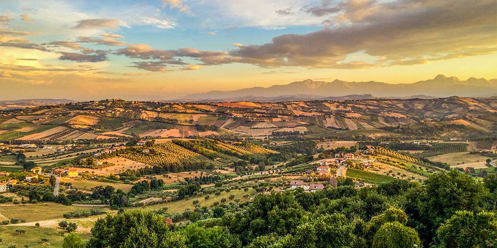

The Route - LANCIANO -TORTORETO
Tuesday 13 October - At 177 kilometres, stage 10 on the Giro d'Italia takes place between San Salvo and Tortoreto Lido. The last 40 kilometres are tailor-made for Classics riders with a series of short and sharp climbs before the finale is played out on the flat. The 10th stage kicks into gear in Lanciano – birth place of Damiano Caruso -, a small town in an elevated spot close to the Adriatic. The riders descend to the coast and head north in the direction of Pescara, but before entering the city – in Francavilla al Mare – the route turns inland to Chieti. Located on a hill, the birth place of last year’s Mountain King, Giulio Ciccone, is the first obstacle in the route. The Giro returns to the Adriatic coast to continue further north. Roughly 10 kilometres before entering seaside resort Tortoreto Lido the riders leave the shoreline for a promising finale. First, they climb to the old town of Tortoreto and descend into Tortoreto Lido for a first passage on the line. Another flat section along the coast goes to Martinsicuro before a 4 kilometres climb at 7% leads to Colonnella. Still roughly 30 kilometres left to race. Following a kick-up to Controguerra – with ramps up to 20% – the riders fly down to the base of a modest climb of approximately 4 kilometres long. A steep descent leads onto an inclination of 2.5 kilometres at 7.1% with stretches up to 17%. The route continues downhill – gradual this time – before the final uphill test appears. The ultimate climb of the day is 1.9 kilometres long. The average gradient sits at 7.2%, while it ramps up to 18% in the steepest section. The route flies down to the last 8 kilometres on the flat. The intermediate sprint at kilometre 146.0 comes with 3, 2 and 1 seconds, while time bonuses of 10, 6 and 4 seconds are awarded to the first three riders on the line.
The race is expected to finish around 16.25 local time (CEST).